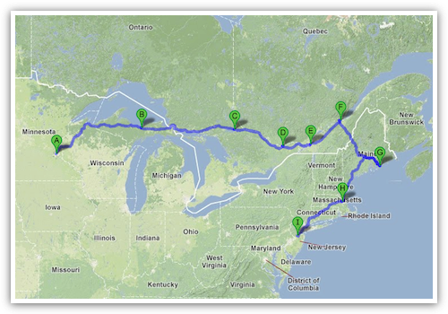

上一篇写于两年前。

一、
要从明州开车去纽约，完成从西岸到东岸的跨越，这是自从我确定搬去纽约那一天开始就想好了的。具体怎么开，却是件颇费思量的事。对着地图看来，怎么走都差不多是从芝加哥到大湖工业老区再到纽约的路线，并不太让人兴奋。直到小弦提醒我说：可以走加拿大啊。
Sounds right.
最终的行程是个风格参差的杂烩，有农业区，有大片的无人森林，有繁华的首都和闹市，有古城，还有在行程过半时才决心插入的国家公园。出发前只确定了头两夜的旅馆，之后每夜琢磨第二天落脚何处，也算是旅行的乐趣所在。和上次从加州到明州相比，这次旅途在时间上要从容些，体力似乎也更好，还有精力在旅途过半时去 Acadia 国家公园尝试了一次极有挑战性的 Precipice Trail（事后证明是我生平最困难也最有意思的爬山经验之一）。全程最终一共历时八天七夜，比我一开始预计的要长得多，所幸也顺利得多。
因为是跨国自驾旅行，所以和上次相比，准备时的困难实际上还要更复杂。加拿大签证很顺利地就拿到了，在加拿大开车所需的保险卡却一波三折才到手。美国驾照因为需要更新，在出发前就已经被明州交管部门剪了一个角。这样的驾照在加拿大能不能用我并不清楚，也懒得仔细去查，因为反正也只能将就着对付，但是为了以防万一还是把中国的驾照也带在了身上。美国签证也即将在几天之内到期，虽然理论上 H1b 身份去加拿大旅行不受回美签证限制，但是心理上还是觉得在签证过期之前赶回美国比较保险，这样一来就又多了一重限制。总而言之，在出发前此行到底能不能顺利完成，我心里一点底都没有。
二、
从明州到位于北密歇根半岛都还只是熟悉的美国旅行模式。从 Sault Ste Marie 入境加拿大开始，一切就带了点冒险的味道。加拿大边境官很痛快地放我入境，甚至连护照上的章都在我提醒下才不情愿地盖上。但是入境之后新鲜的道路标示系统还是让我有点紧张。不知道为什么，开着明州车牌的汽车行驶在加拿大公制里程限速的土地上，总觉得惶惶不安，好像自己随时会被警察 pull over 一样。
接下来从安大略到魁北克的几天，困难一点点增加（主要是法语的缘故），但是心理上也越来越淡定。渥太华对英语游客的友好自不必谈，蒙特利尔之旅实际上也相当自如，远不像我想象中的麻烦（也许是在巴黎时的经历留下的影响，我总是对在法语区和人交谈有种心理上的阴影。）至于在魁北克城，我很知趣地停留在游客集中的老城区。真正原生态的魁北克民间风情，还是留待来日再去发掘吧。
即便如此，离开加拿大的时候还是有种松了口气的感觉。在缅因州北部的 201 公路入境美国时恰巧是签证过期的当天。入境官对着我的护照研究了半天，咨询了一下同事才迟疑地放行。进入美国之后我做的第一件事是在森林深处的边检站里去了一趟洗手间，心想，这下被警察拦下来也不怕了。
之后在 Acadia 国家公园旁过了一夜，第二天沿着 95 号州际公路一路向南。看着人烟渐盛，多少有点「行百里而半九十」的惴然。直到最终挤过曼哈顿壅塞的街道，把汽车停在朋友家的公寓前，还是有点不能相信，这就算结束了么？
总觉得好像顺利得不太真实一样。
三、
自驾行虽然辛苦，也有它无可取代的乐趣。开车经过大大小小的城镇乡村，广播里的口音和路旁的风景在单调中默默变化，像是天上的云彩一样，要耐住性子才能看出流动的模样来。
不知道为什么，开车路过一个干净的小城市，坐下来找家快餐店休息半个小时，对于我总是一件一想起来就满心愉快的事。无论是美国还是加拿大，这些城市看起来都大同小异，多半只有几千或一两万人口，几条主要街道，路上无论是白天还是晚上都几乎没有行人，路边不外是教堂、集市、饭馆和电影院，交杂坐落在沉默的街区里。但是从广袤无人的粗犷乡间一头扎进干净熟悉的文明世界，总有种浑身都能放松下来的惬意感。
可是我也一路都忍不住反复琢磨，究竟为什么会有人生活在这里呢？或者说，这些小镇为什么能够长期存在呢？这里的居民看起来并不是农业人口，也并没有什么大工业存在于附近，所以似乎大多数人的职业就是为同城居民彼此服务。他们中当然有人生于斯长于斯，一辈子终老于此，可是总会有很多年轻人要走出家乡念书工作，为什么他见过全世界的风景之后，还会甘愿回到这些小城镇里呢？
这困惑在路上一直萦绕在我的脑海里。事实上，它也在过去几年里一直伴随着我。有一次我读到卡特总统在退休后仍然生活在他和他的妻子所出生的佐治亚州小镇 Plains 里，这个远离尘世的南方小城人口不到一千，人均收入只有一万美元左右，而卡特至今仍然担任着这座小镇的浸信会的执事，每周日在教堂布道（如果他没有出外旅行的话）。这个事实多少有点超出了我的人生经验之外，直到今天都是如此。
我常常会设想自己未来人生的轨迹会是什么模样。我知道自己很可能不会长久生活在纽约，但是我更清楚地确定自己不会远离城市生活。唯其如此，这一路上所经过的或大或小的山村城镇才更像是一种尖锐的提示，让我意识到在我自己的生活之外，还有太多迥然不同的生活方式存在着。它们面对着全然不同的问题、目标、困境、痛苦、价值观和成就感，而那些对我而言常常显得 overwhelming 的属于我自己的追求和理想其实都只是这大布景里一个平凡的元素而已。
当我穿过整个美洲大陆终于到达纽约时，心里并没有太多想象中会有的成就感。这城市只是起点，并非终点。我看着它仿佛触手可及而终于远去的天际线，只觉得前面的一切都显得更加模糊了似的。

August 27th, 2012 13:29
真好啊~~~~ 一路走一路玩
August 27th, 2012 17:14
提到缅因州就想到了三毛，她说缅因州是自己在美国最喜欢的地方，不知一个人在那里一直生活着的状态是怎样
August 27th, 2012 22:48
我得说，我这个城市人已经理解了村里人的心态。
另外，不知道你有啥可紧张的。
另外，村里的年轻人很多是不出去上学的。某人在匹兹堡的时候，有次到周边一村里喝酒，同去的同学问旁边的本地女孩为啥不出门去旅行去瞧瞧，人家满不在乎地说：“Well, we’ve been to Pittsburgh.”
August 28th, 2012 04:38
我原来也不理解，后来自己在离纽约一个小时远的一个小镇住了一年，也开始有点体会了。我们是城市里长大的，于是觉得城市才是最自然的生活状态，看到熙熙攘攘车水马龙和万家灯火才有安全感。但就我接触的美/加/欧洲这些人来说，他们很多在郊区或者是小镇长大，生活圈子小，人际关系简单，街坊邻居熟人朋友经常聚会，但又有足够的空间隔开，出门就能看到山川树林各种小动物，占据他们生活的东西以及他们跟外界互动的方式是跟城市人不太一样的，而且也很难说孰优孰劣。这事其实关乎归属感——有的人走遍世界还回到小镇，可能是最终还是家乡能带来熟悉和自在的感觉吧。
September 3rd, 2012 09:37
有时会忽然意识到自己追求的价值和理想其实没有什么意义，于是实现他们的都市也就失去了吸引力
September 6th, 2012 16:47
自由的行者